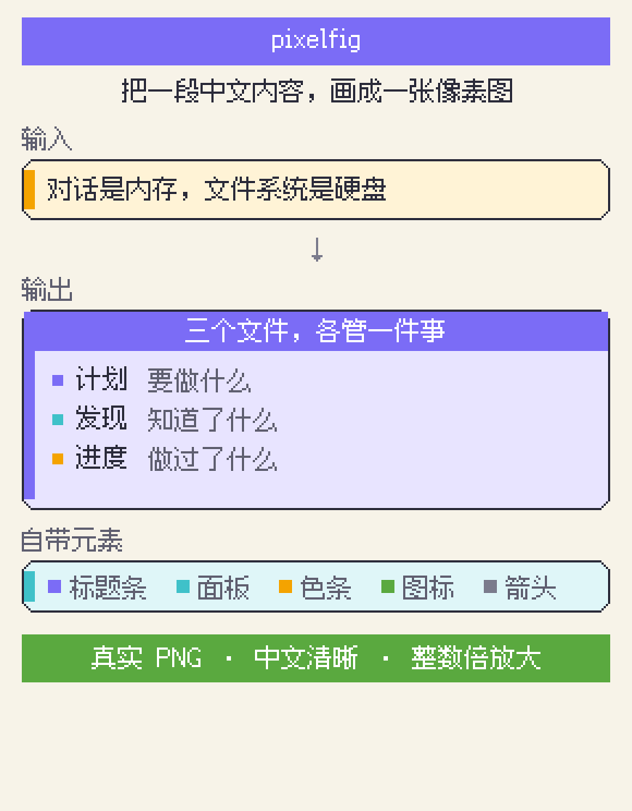

输出真实 PNG，不走 SVG。
中文排版开箱可用。
npx skills@latest add dongliang/skills --skill pixelfig字体要单独下（约 12MB）：sh scripts/install-fonts.sh

# 装完字体后，在 Python 里直接调
import sys; sys.path.insert(0, "scripts")
from pixelfig import *
c = Canvas(290, 200)
c.bar(10, 8, 270, 18, PURPLE, label="标题")
c.panel(10, 30, 270, 60, accent=CYAN, fill=CYAN_L)
c.text(22, 40, "正文", 12, INK)
c.save("out.png", scale=3)| 用途 | 来源 |
|---|---|
| 图像绘制 | Pillow（Python 3） |
| 中文像素字 | Fusion Pixel Font · Cubic 11（均为 OFL-1.1） |